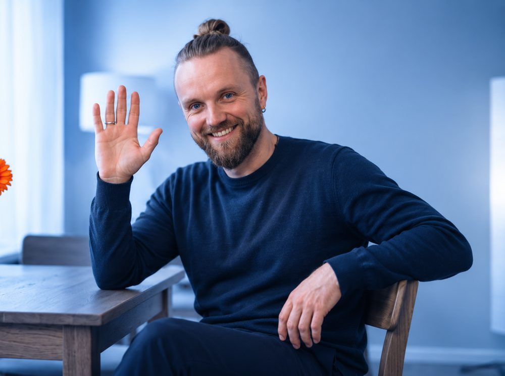
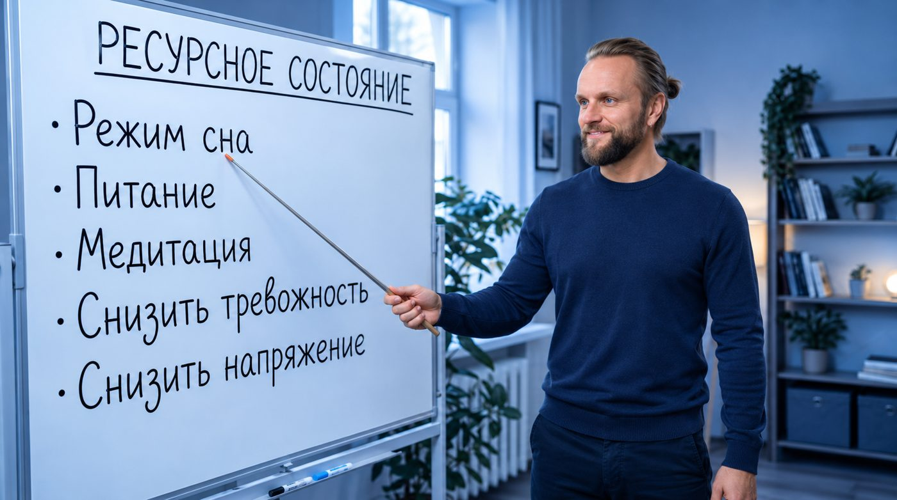

Вы не ленивая и не сломанная. Вы обесточенная
Энергия утекает через тревогу, обиды и чужие сценарии. Убираем утечки на практике, и возвращаются сила, сон и ясность. А из ресурса жизнь выправляется сама.

Три опоры одновременно
Если держится только одна, ресурс снова утекает. Работа идёт на всех уровнях сразу.
Жизнь на автопилоте
Для женщин 30–47 лет, которые выгорели, потеряли энергию и вкус к жизни. Усталость при этом не лень и не возраст.
Хроническая усталость
Просыпаетесь уже без сил. Отдых не заряжает, выходные уходят на восстановление.
Тревога без повода
Внутри постоянное напряжение. Голова прокручивает сценарии, расслабиться не получается.
Плохой сон
Долго засыпаете, просыпаетесь ночью или вставать утром тяжело, сколько бы ни спали.
Нет вкуса к жизни
Раньше радовало, теперь всё серое. Желаний мало, делаете «надо», а не «хочу».
Чужие сценарии
Живёте так, как ждут от вас, а не так, как хочется. Чувствуете, что это не ваша жизнь.
Привязки и обиды
Прошлые отношения и невысказанное продолжают забирать силы, хотя вы «давно отпустили».
Не лень и не возраст. Это утечки энергии
Обиды, чужие сценарии, привязки к людям, незавершённое: всё это тихо забирает силу каждый день. Психолог чинит голову, зал даёт тело, медитация работает с энергией. По отдельности это не держится.
Верните энергию из утечек, и меняется не настроение. Меняется вся траектория.
Не «просто медитируй», а три шага
Работа идёт по понятной схеме: найти, где именно уходит сила, убрать это на практике и закрепить, чтобы результат не откатился.
Выявить причину
Диагностика: где и через что утекает энергия. У каждого свой набор: тревога, обиды, чужие сценарии, привязки, незавершённые дела.
Устранить на практике
Не разговоры «про», а конкретные практики и процедуры, которые снимают утечку, а не маскируют симптом.
Зафиксировать
Закрепляем новое состояние в теле, психике и энергии, чтобы ресурс оставался с вами и после работы.
Нужны все три разом
Тело
Сон, тонус, дыхание, телесное напряжение. Зал и режим дают базу, но сами по себе не снимают причину усталости.
Психика
Тревога, сценарии, обиды, внутренние запреты. Психолог помогает разобраться в голове, но энергия остаётся прежней.
Энергия
Утечки, привязки к людям, незавершённое. Здесь рождается ощущение силы и «это моя жизнь».

Что вы чувствуете после работы
Результат у каждого свой, но направление общее: из состояния «выжата» к состоянию «живу».
- Возвращается энергия, утром не нужно себя собирать
- Тревога отпускает, внутри становится тише
- Налаживается сон
- Появляется ясность: что вам нужно, а что навязано
- Уходит тяжесть от обид и незавершённого
- Подтягиваются отношения и дело, без насилия над собой
Ничего «мистического» заранее верить не нужно
Подход построен на практике: делаем, замечаем изменения в теле и состоянии, закрепляем. Без обещаний чудес и без давления. Работа не заменяет медицинскую помощь и психотерапию при диагностированных состояниях.
Выберите глубину работы
Начните с бесплатной ознакомительной встречи: обсудим запрос и подберём формат. Если не уверены, что выбрать, напишите, и мы подскажем.
Ознакомительная встреча
- Обсуждаем ваш запрос и подход Евгения
- Форматы работы и примеры практики
- Взаимное решение о сотрудничестве
Стратегическая сессия
- Подробный разбор запроса и ситуации
- Определение приоритетов и целей
- Рекомендуемый формат дальнейшей работы
Программа глубокой проработки
- Комплексная диагностика здоровья, отношений и финансов
- Составление паспорта клиента
- Определение приоритетов дальнейшей работы
Программа для поколения Zoomers
- Та же программа глубокой проработки на особых условиях
- Четыре встречи: разбор запроса и приоритетов
- Скидка 40% от стандартной стоимости
Личное сопровождение
- Индивидуальное сопровождение
- Интенсивность и формат подбираются под вас
- Следующий шаг после программы глубокой проработки
Поддерживающие встречи
- Для сохранения достигнутых результатов
- Дальнейшая поддержка
- Подходят после завершения флагманской программы
Евгений Про — практик ресурсного состояния
Работаю с человеком сразу на трёх уровнях: тело, психика и энергия. Помогаю выйти из тревоги и хронической усталости в ресурс, убираю то, что забирает силу.
Мой принцип: не «просто медитируй», а система. Выявить причину, устранить на практике, зафиксировать результат. В блоге «Ресурсное состояние» я делюсь практиками, разборами и эфирами, а с вопросами можно прийти лично.
Кейс Ирины: интенсив перед операцией
Ирина пришла к Евгению, когда ей предстояла операция по удалению щитовидной железы. Врачи рекомендовали хирургическое вмешательство.
Серьёзный медицинский диагноз, предстоящая операция и сильная тревога за своё здоровье.
Перед окончательным решением Ирина прошла две недели интенсивной индивидуальной работы. Затем повторно обследовалась, и врачи пересмотрели вопрос об операции.
Частые вопросы
Это психотерапия или медицина?
Нет. Это практика работы с ресурсным состоянием: телом, психикой и энергией. Она не заменяет врача и психотерапевта, если у вас диагностированное состояние. Если есть сомнения, лучше сочетать.
У меня просто нет сил. Это вообще поправимо?
Чаще всего усталость связана не с возрастом и не с ленью, а с утечками энергии: тревогой, обидами, чужими сценариями, незавершённым. Когда причину находят и убирают, силы возвращаются. На ознакомительной встрече и стратегической сессии мы смотрим, что именно происходит у вас.
С чего лучше начать?
Начните с бесплатной ознакомительной встречи на 30 минут. Если нужна точная картина и приоритеты, следующим шагом идёт стратегическая сессия, а для глубокой работы есть программа из четырёх встреч.
Работа проходит онлайн?
Да, ученики практикуют из разных стран. Формат и время обсуждаем после заявки.
Через сколько будет результат?
У каждого свой темп. Многие замечают изменения в состоянии, сне и тревожности уже в начале работы, а глубокие изменения закрепляются при системной работе. Конкретные результаты не гарантируются.
Чем это отличается от психолога, зала и медитации?
Психолог работает с головой, зал с телом, медитация с энергией. По отдельности эффект не держится. Здесь все три уровня в одной системе: сначала находим причину, потом устраняем, потом фиксируем.
Как записаться?
Оставьте заявку в форме ниже или напишите в Telegram @tvoy_dzen. Мы ответим, подскажем формат и согласуем время.
Твой Дзен в сети
Практики, эфиры и разборы.